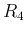
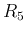
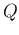
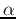
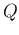
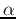

E84 Lab: Active Filters
Here  and  are the top and bottom parts of a potentiameter
which controls the amount of feedback from the output to the
twin-T filter:
Express the frequency response function (FRF) of the circuit in the
canonical 2nd order form and determine  and  in terms
of R, C, and .
and  in terms
of R, C, and .

What to turn in: